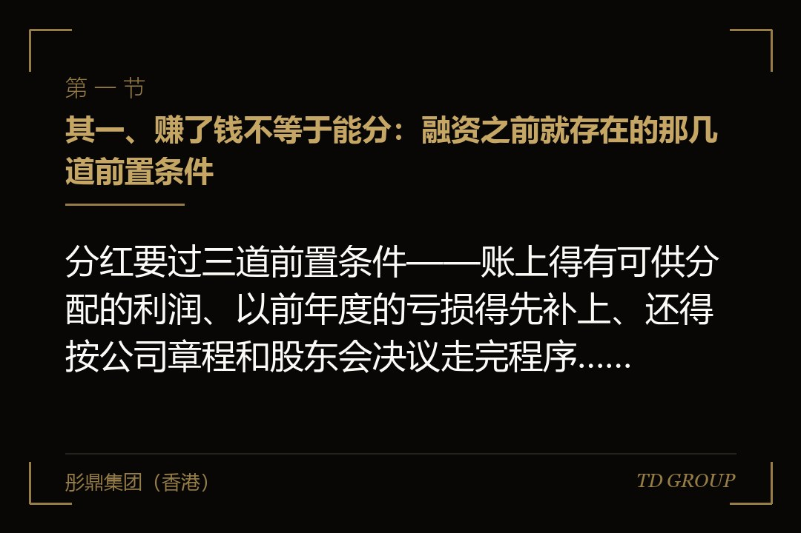
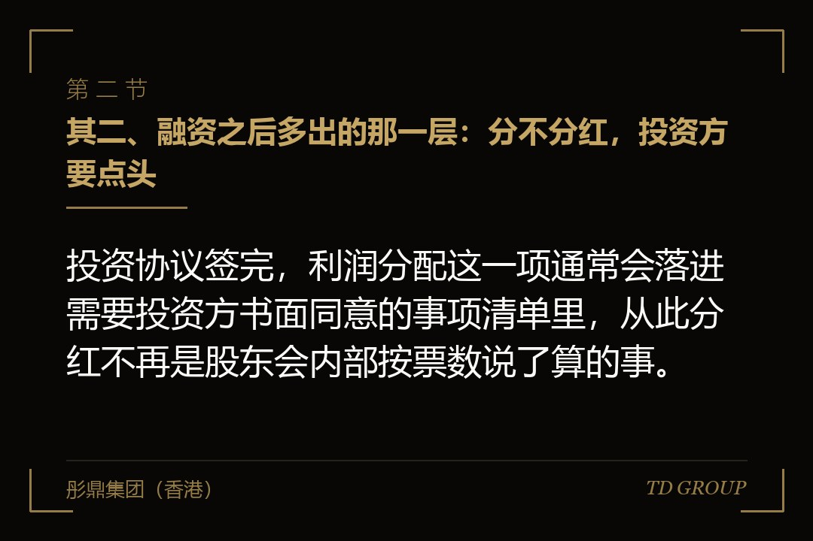
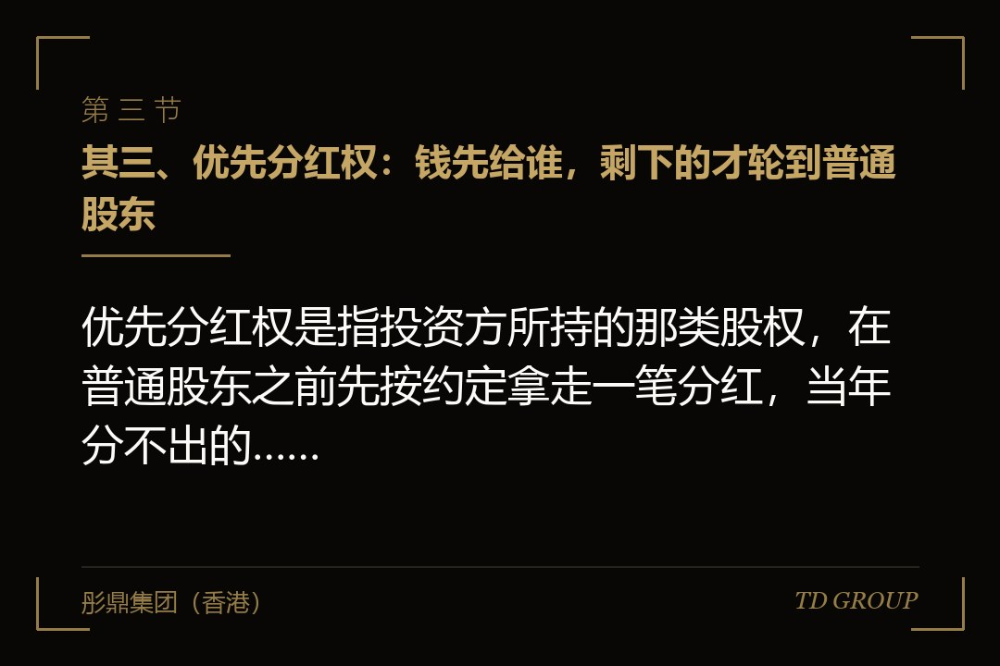

其一、赚了钱不等于能分：融资之前就存在的那几道前置条件

结论先行：分红要过三道前置条件——账上得有可供分配的利润、以前年度的亏损得先补上、还得按公司章程和股东会决议走完程序，缺一道都不成立。
头一道是"可供分配的利润"。它不是银行账户里的余额，也不是这一年的销售额，而是按会计准则算出来、扣掉该扣的之后剩下的那个数。很多创始人卡在这里：账上明明有钱，但那笔钱是刚到的融资款，或者是客户的预付款，它们从来不是利润。
第二道是补亏损。公司前几年亏掉的，要先用后面赚的补平，补平之前谈不上分配。这一条对刚扭亏的公司最不友好——账面上今年赚了两千万，前面三年一共亏了三千万，那么今年这两千万一分钱都出不来。
第三道是程序。利润分配方案通常由董事会拟、股东会定，具体怎么走看公司章程怎么写。少了决议就把钱分掉，性质上不是分红，是股东从公司拿走了一笔说不清的钱，这笔钱在后面的尽调里一定会被翻出来。
这三道条件与有没有拿融资无关，它们本来就在。具体的计提口径、比例与程序要求各地不同、也会调整，以主管机关当时有效的规则与口径为准。真正的变化在下面——投资方进来之后，这条链的后面又接上了两段。
其二、融资之后多出的那一层：分不分红，投资方要点头

结论先行：投资协议签完，利润分配这一项通常会落进需要投资方书面同意的事项清单里，从此分红不再是股东会内部按票数说了算的事。
同意事项清单是投资方保护自己的常规工具，上面通常有增资、转股、重大资产处置、对外担保这些条目，利润分配是其中一条。它的效力不体现在投资方能替公司决定分多少，而体现在没有它点头，这件事根本走不到表决那一步。
创始人容易低估的是这一条与持股比例的脱钩。他手上可能还有六成多的表决权，股东会上按票数是过得去的，可协议里那句"未经投资方书面同意不得进行利润分配"是另一套机制——它不参与数票，它管的是这件事能不能被提出来。
清单本身怎么谈短、卡死的代价是什么，另有专文，这里只说分红这一条落进清单之后的直接后果：公司账上有钱、股东会有票、方案也拿得出来，但只要那一边不签字，钱就在公司里待着。
有家做宠物食品代工的公司，第二轮融资的清单上多了一句，把分红的条件写成了需要持股达到一定比例的投资方一致同意，当时进来的投资方是三家。三年后公司想分一笔，其中一家的基金已经进入清算期，联系人换了两轮，那份同意函拖了四个月。
其三、优先分红权：钱先给谁，剩下的才轮到普通股东

结论先行：优先分红权是指投资方所持的那类股权，在普通股东之前先按约定拿走一笔分红，当年分不出的，有的还要按约定的计算方式逐年累计到以后。
它的机制不复杂：这一年公司决定分钱，先按投资协议里的计算方式给优先的那一类算出一个数，付完这个数，剩下的才进入按持股比例分配的池子。所以"公司今年分了一笔"和"创始人今年拿到一笔"从来不是同一件事。
真正的分水岭是累积与不累积。不累积的写法下，今年不分就是不分，明年从头算；累积的写法下，今年该给而没给的那部分不会消失，它挂在那里，等哪天公司要分红、要被并购、要清算的时候，先把历年欠的一次补齐。
累积这两个字签的时候几乎没有阻力——公司当时正缺钱，谁也不觉得几年内会有钱可分。等到真有钱分的那一天，历年累计的那个数常常大到让分红这件事直接失去意义：先补完前面几年，池子里就没剩什么了。
有家做园林绿化养护工程的公司就撞上过这个。它连着五年没有分配过利润，其间做过两轮融资，两轮的优先分红都写了累积。第六年它拿了一笔大标，账上头一回宽裕，创始人算完才发现，按协议先要补的那部分几乎等于当年能分的全部。
其四、参与还是不参与：先拿一笔之后，还要不要再跟着分一次
结论先行：非参与型是优先的那一笔拿完就止步，参与型是拿完之后还要按持股比例跟着分一次，两种写法在同一笔利润上的结果差得很远。
用一个明示为假设的算法就清楚了。假设公司决定分配的总数是一千万，投资方持股两成，协议约定的优先分红是两百万。非参与型下，投资方拿两百万，剩下八百万由全体股东按持股比例分，创始人这边分到的是八百万里属于自己的那一块。
参与型下，投资方先拿那两百万，剩下的八百万它还要按两成再分一次，也就是再拿一百六十万，合计三百六十万。同一笔一千万，投资方在两种写法下相差一百六十万，而这个差额全部来自普通股东那一侧。
这两个词在条款清单上只差几个字，谈判时几乎不会被单独拎出来讨论——大家的注意力都在估值和优先的倍数上。它真正被读懂的时刻，往往是公司头一回要分钱的那天，而那时候协议早就签了两三年。
需要划清的是：清算优先权里也有参与型和非参与型，那讲的是公司被卖掉或者解散时怎么分家当，与日常经营中分不分利润是两回事，另有专文。本篇讲的自始至终是后者。
其五、两边的账本不一样：这不是谁不讲道理
结论先行：创始人几年不领高薪等的就是分红，投资方要的是钱留在公司里换增长，同一笔利润在两个账本上算出来的价值完全不同。
先看创始人这一侧。他前几年压着自己的薪酬，把能投的都投进去了，家庭开支、房贷、孩子读书这些事一直靠积蓄顶着。公司终于赚钱了，分红对他来说是把过去几年的付出兑现成能用的钱，这是很实在的诉求，不是贪。
再看投资方这一侧。它投进来的钱，账上算的是这笔钱能换来多少增长——产线、渠道、团队、市场。公司把利润分出去，等于把它刚投进来的钱又拿了一部分出去，而它退出靠的是公司将来卖得掉或者上得去，不是每年这一点分红。
所以两边争的其实不是"该不该给他钱"，是"这笔钱放在公司里更值钱，还是拿出来更值钱"。这个问题没有标准答案，取决于公司现在处在什么阶段：还在抢市场的时候投资方那套算法更站得住，增长已经平下来的时候创始人这套更站得住。
认清这一点的价值在于谈法。把它当成对方不讲道理，谈出来的是情绪；把它当成两套算法在同一笔钱上打架，谈出来的就是条件——什么阶段允许分、分之前要满足哪些经营指标、一年最多分到什么程度。这些都是可以写进协议的。
其六、创始人的薪酬这条线，融资之后也不再是自己定的
结论先行：不领高薪等分红这套安排，在融资之后同时被两头卡住——分红那头要投资方点头，薪酬这头往往也写进了需要同意的事项。
创始人的薪酬、奖金以及关联方的报酬安排，在很多投资协议里与利润分配写在同一张清单上。理由不难理解：如果薪酬可以随便定，那么"不许分红"这一条随时能被一笔高薪绕过去，投资方不会留这个口子。
于是常见的局面是：分红分不了，工资也涨不上去，而创始人这几年的付出没有任何一条通道可以兑现。这种状态撑不了太久，撑不住的时候人就会去找别的路——从公司借一笔、把开支放进报销、通过关联方走一笔采购。
这三条路在融资之后风险陡增，因为公司从此有了一个会看账的外部股东、有了定期报表的义务、也有了写在协议里的陈述与保证。这几种做法各自的边界与后果另有专文，本篇只提示一句：其中任何一条被翻出来，代价都比当初谈一个合理的薪酬口径大得多。
更稳妥的做法是在签字之前就把薪酬口径谈定：创始人及核心团队的年度薪酬按什么标准定、多久调一次、调整需不需要投资方同意、以什么为参照。谈这件事一点都不难堪，投资方也不希望创始人为了生活去动公司的钱。
其七、上市这条路上，分红这件事还要被再问一遍
结论先行：申报之前的报告期内有过大额分红的，中介机构与监管通常会追问一句：既然缺钱要融资，为什么又把利润分掉了。
这个问题的落点不是"分红违不违规"——按程序分的红本身是股东的正当权利。落点在于它与融资之间的解释：一边告诉市场公司需要资金投入产线和研发，一边把利润分给了原股东，这两件事摆在一起，需要一个说得通的理由。
更敏感的是钱的去向。分红分到创始人手上，如果这笔钱转了一圈又以增资的形式回到公司，或者用于冲抵股东与公司之间的往来款，那么这一进一出的商业实质就会被逐笔追问，相关的凭证、时点和资金流水都要拿得出来。
有家做商用中央空调安装维保的公司，报告期内做过一次金额不小的分配，钱到了几位原股东账上。后来准备申报时，中介让它把每一笔的去向说清楚，光是找回当年的银行流水和董事会文件就花了两个多月，而这原本是分红那天顺手就能留下的。
所以真正的准备动作不在申报那一年，而在每一次分配的当时：决议、方案、凭证、完税记录、资金流水一次留全。具体的申报期口径与问询侧重会变，以主管机关当时有效的规则与口径为准，但"留全底稿"这一条从来不会过时。
其八、签字之前把这五件事写清楚
结论先行：分红这件事真正的谈判窗口只有一个，就是投资协议签字之前，签完之后再想改，代价是拿别的条件去换。
头一件是决策门槛。分红需要投资方同意，那就写清楚是哪一类投资方、按什么比例计算、是全体一致还是达到某个比例即可、多长时间内不答复视为同意。上面那家宠物食品代工公司拖的四个月，卡的就是没有写不答复怎么办。
第二件是优先分红到底累不累积。这一个词的差别在前面已经算过，签之前必须问明白，并且把不累积或者设上限的写法争一争。第三件是创始人与核心团队的薪酬口径，跟上一条放在一起谈，别让两头同时锁死。
第四件是什么情况下允许分。可以约定成条件式的：某项经营指标达到之后、某笔投入完成之后、现金余额高于某个水平时，公司有权按不超过当年利润某个程度分配，不再另行取得同意。这一条把"能不能分"从每年一次的博弈变成事先定好的规则。
第五件是申报期怎么办。上市申报前后通常需要把这类特殊权利终止或者调整，那就在协议里预先约定终止的时点与方式，别等到中介进场那天再逐家去谈。上市前特殊权利的收口另有专文。
有位企业主在华尔街彤鼎俱乐部的一次交流里讲过一句话：他说自己两轮融资都在争估值，回头看真正影响这几年生活的是分红那一条，而当时他连累不累积都没问过。
这五件事都不复杂，写清楚它们花不了几天时间，难的是在签字那天愿意为它们多花两天。那些在架构和条款上出过一次代价的企业主，后来在俱乐部里说的往往是同一句：这几条越早写清楚，代价越小。